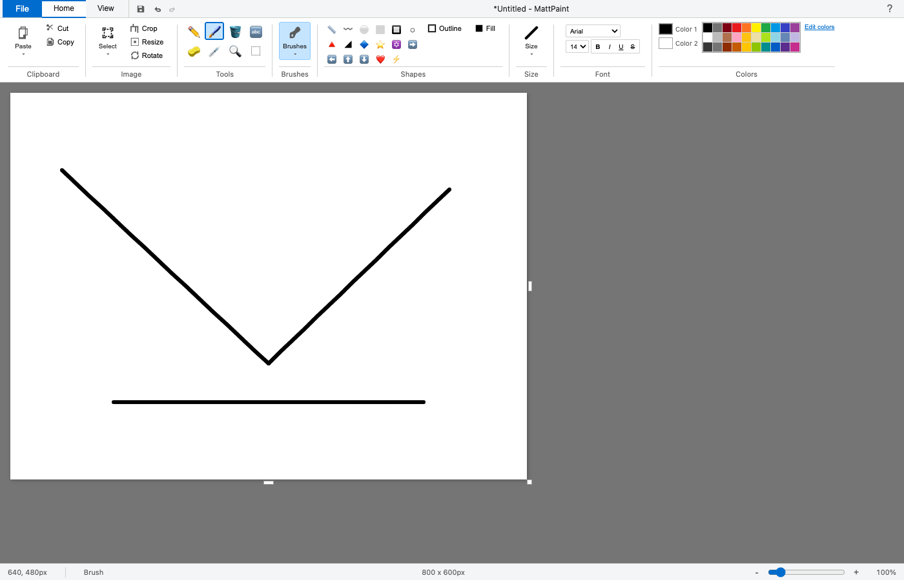
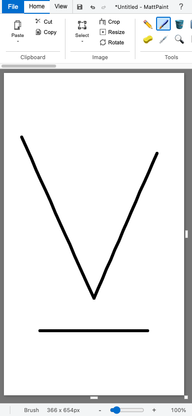
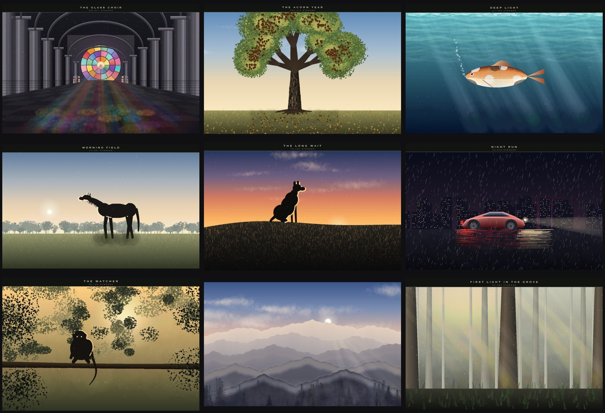

Microsoft Paint, back on every screen.
MattPaint is a free recreation of Paint from Windows 10. It runs in any browser, on phones and tablets, and as a Mac and Windows app. Every classic tool, shape and brush is there. No account, no ads, no tracking.
Mac: Apple Silicon and Intel, macOS 11 or later, signed and notarized. Windows: 10 and 11. Version 1.0.0.


What it does
You open it and draw, the same way you did in Paint. Pencil, brushes, fill bucket, eyedropper, text, shapes, select and crop, rotate and flip, resize and skew, zoom, rulers and gridlines. The ribbon, palette and status bar look and sit where you remember them.
The web version is plain JavaScript and HTML5 Canvas, about 230 KB with no libraries and no build step. The Mac and Windows app wraps that same Paint in its own window using the open source Tauri framework, and turns Save, Print and Set as desktop background into the real thing: a save window, the system print dialog, and a wallpaper that actually changes.
Who it's for
People who miss Paint
On a Mac, a Chromebook, a phone or an iPad, where Paint never existed.
Kids and classrooms
Opens in a browser tab with nothing to install and no sign up.
Quick edits
Crop a screenshot, circle something, add an arrow and some text, save as PNG or JPEG.
Touch and stylus users
Draw with a finger or a pen on phones and tablets. The canvas sizes itself to the screen.
Keyboard users
Single key tool shortcuts (P, B, E, G, T, I, S, Z, L, R, O) plus the usual Ctrl or Cmd shortcuts.
People learning to code
One readable JavaScript file, MIT licensed, no frameworks.
Features
Nine brushes
Standard, two calligraphy angles, airbrush, oil, crayon, marker, natural pencil and watercolor. Marker and watercolor are see-through.
Every classic shape
Line, curve, rectangle, rounded rectangle, oval, polygon, triangles, diamond, 5 and 6 point stars, four arrows, heart, lightning bolt. Outline and fill styles.
Selections
Rectangle and free-form lasso, move, cut, copy, paste, transparent selection, crop to selection.
Image tools
Rotate 90 or 180 degrees, flip, resize by percent or pixels with aspect lock, skew, zoom from 12.5% to 800%.
Text
Fonts, sizes, bold, italic, underline and strikethrough.
Files
Open or drag in an image. Save as PNG, JPEG or WebP. Print. Copy the picture to the clipboard, or share it from a phone's share sheet.
50 steps of undo
Undo and redo from the quick access bar or the keyboard.
Edit colors
A 30 color palette, a custom color picker with hue, RGB and hex input, and custom color slots.
Self-tested
Add ?test to the address and 65 checks run inside the live page. The Windows build runs its own save, print and wallpaper self-test before it ships.
Get it
The browser version and both desktop downloads are free and available now.
On iPhone, iPad and Android today, MattPaint runs in the browser at nicedreamzwholesale.com/paint. Also mirrored at nicedreamzapp.github.io/MattPaint.
It can also paint by itself
A side experiment in the repo drives MattPaint through the Chrome DevTools Protocol and paints pictures stroke by stroke, from a one line prompt, with no images going in. A local open-weight vision model (Gemma 4 or Qwen, run on a Mac with Apple's open source MLX and the community mlx-vlm package) writes a short recipe, looks at the painting, and revises it. Every brush stroke happens in the real app, on screen.

FAQ
Is it really free?
Yes. The browser version and the Mac and Windows downloads cost nothing, and the code is MIT licensed.
Is this made by Microsoft?
No. MattPaint is an independent recreation of how Paint looked and worked in Windows 10. It is not affiliated with or endorsed by Microsoft.
Do I need an account?
No. There is no sign in, no account and nothing to register.
Does it work offline?
The desktop app works fully offline. The web version is plain files with no server calls, so once the page has loaded you can keep drawing without a connection.
Does it work on iPhone, iPad and Android?
Yes, in the browser. Touch and stylus drawing work, the canvas sizes itself to the screen, and the ribbon scrolls sideways. On phones you can share a picture straight to the share sheet.
What file types can I save?
PNG, JPEG and WebP. There is a BMP option, but browsers can't encode BMP from a canvas, so most will give you a PNG with a .bmp name. Pick PNG for a real lossless file.
Is it accessible with a screen reader?
Not well yet, and we would rather say so up front. Every tool has a keyboard shortcut and a tooltip, and focus moves through the ribbon with Tab, but the buttons do not carry screen reader labels yet and drawing on the canvas needs a pointer, finger or stylus. Feedback from screen reader and switch users is very welcome.
What's different in the desktop app?
The same Paint, in its own window. Save opens a real save window, Print uses the system print dialog, and Set as desktop background sets your wallpaper. In the browser those become a download, a print pop-up, and instructions.
Is there a Linux build?
Not of the desktop app. Linux users can use the browser version.
Privacy
Your pictures stay on your device. MattPaint has no accounts, no ads, no analytics and no tracking code, and the app itself makes no network requests. Drawing, undo history and the clipboard all live in your browser tab or in the app's window.
Pictures only leave the app when you save, print, copy or share them yourself. The desktop app keeps a copy of a picture you set as wallpaper in its own app data folder, because the operating system needs a file to point at.
TODO-VERIFY There is no written privacy policy in the repo; this summary is based on reading the app's code. The web host (nicedreamzwholesale.com or GitHub Pages) may keep standard server logs. Link the full policy here once it exists.
Contact and press
MattPaint is made by Matt Macosko at Nice Dreamz. For reviews, interviews or screenshots, get in touch through nicedreamzwholesale.com/software TODO-VERIFY press contact email. Bugs and ideas go to GitHub issues.
Press assets: desktop screenshot (1400 by 900), phone screenshot (390 by 844), app icon (1024 by 1024), paintings collection. Fact sheet: PRESS.md.